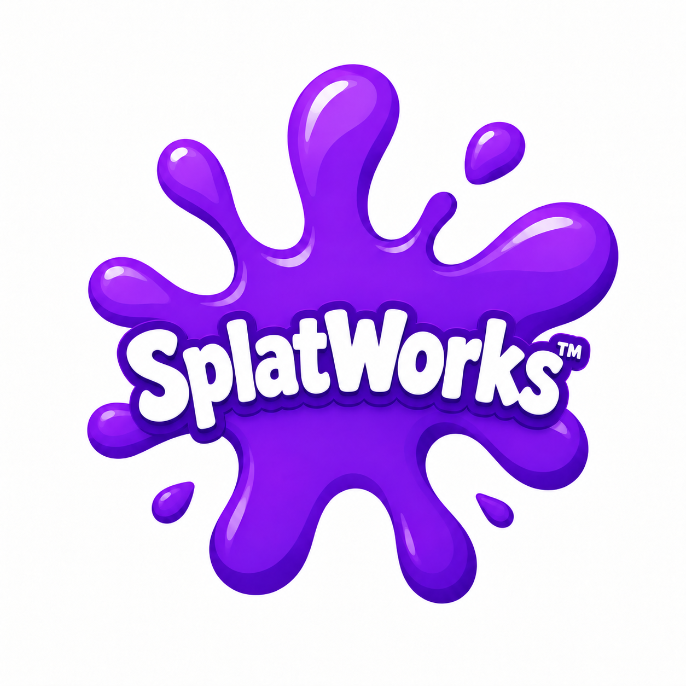

Organize a course
Publish lessons, enroll learners, organize groups and make course activities easy to follow.

SplatWorks WikiSplatWorks ecosystem · Learning management
The SplatWorks Learning Management System. Bring courses, learners, assignments, assessment and progress together.
Create with SplatWorks. Teach with SplatLMS. Build a course around the DrawSplat whiteboard, office apps, creative tools and classroom activities, then give learners a place to follow lessons, submit work and see feedback.
Free to download and self-host · PHP 8.1+ · SQLite or MariaDB/MySQL · Includes SplatWorks Educator
Publish lessons, enroll learners, organize groups and make course activities easy to follow.
Use quizzes, assignments, rubrics and forums to gather work, check understanding and give feedback.
Review completion, reports and transcripts. Use course badges and certificates to recognize achievement.
The first course is included: five modules, twenty lesson sections and five knowledge checks. Explore DrawSplat, office apps, media, classroom practice, feedback, typing activities and a capstone.
Written lessons, worksheets and activities stand on their own. Twenty optional video overviews include synthetic English narration, captions and transcripts. The course badge does not confer external accreditation; approved CPE/GT credit is currently 0 hours.
Tools keep their own saving and accounts. Lesson links and file submissions connect the workflow; tool storage, quiz files, grades and PlanSplat schedules do not synchronize automatically with the LMS.
Explore the SplatWorks ecosystem · Choose tools for a course
SplatLMS is part of SplatWorks and has its own installer and learner database. Download the full ZIP from the SplatWorks downloads page, choose a native PHP or Docker setup, create your administrator and publish your course.
The public SplatWorks website introduces the LMS. To take a course, use your school or provider's installed SplatLMS address and account instructions. Static web hosting and the office tools' Python launcher cannot run the PHP LMS.
Use HTTPS and persistent storage for production. Follow the installation guide for requirements, separate account and data boundaries, backups and updates.
Adapted from Sapiqo LMS by Miguel Guhlin. SplatLMS retains its CC BY-SA 4.0 license and third-party notices. Contact and support.